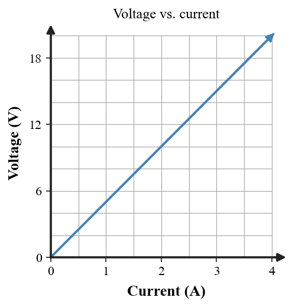

Students will analyze electric charge, electric forces, voltage, current, resistance, power, energy, and circuits by modeling how charge interacts, how voltage drives charge flow, how resistance affects current, how electrical energy is transferred, and how series and parallel circuits behave in real-world systems.
| Rung | I Can Statement | DOK | Level |
|---|---|---|---|
| 8 | I can design, defend, or critique a complete electric-circuit model for an unfamiliar real-world system using diagrams, evidence, formulas, and circuit principles. | DOK 4 | Above |
| 7 | I can compare competing explanations of charge behavior, voltage, current, resistance, power, or circuit design and justify which explanation better fits the evidence. | DOK 4 | Above |
| 6 | I can connect circuit diagrams, data tables, formulas, energy-transfer models, and written scenarios to explain electrical behavior. | DOK 3 | Essential |
| 5 | I can identify and correct misconceptions about charge, static electricity, voltage, current, resistance, Ohm’s Law, power, or series and parallel circuits. | DOK 3 | Essential |
| 4 | I can calculate electric force, voltage, current, resistance, power, energy use, or equivalent resistance in simple situations and interpret the answer in context. | DOK 2 | Essential |
| 3 | I can interpret charge diagrams, electric-force diagrams, circuit diagrams, voltage-current graphs, and series/parallel models. | DOK 2 | Essential |
| 2 | I can define and recognize key terms such as charge, conductor, insulator, voltage, current, resistance, circuit, power, energy, series, and parallel. | DOK 1 | Essential |
| 1 | I can recognize whether a situation involves static charge, charge transfer, current, voltage, resistance, electrical energy transfer, or a complete circuit. | DOK 1 | Essential |
Format: 3–5 minute warm-up, quick check, image prompt, vocabulary check, mini-whiteboard response, card sort, circuit-symbol labeling, charge-interaction sort, or exit ticket
Purpose: Check whether students can recognize basic electricity vocabulary, classify charge interactions, identify simple circuit features, and distinguish charge, voltage, current, resistance, power, and energy.
State whether like electric charges attract or repel.
Classify copper wire as a conductor or insulator.
Name the charging process that occurs when charge is rearranged without direct contact.
Complete the statement: Electric current is the rate of flow of electric __________.
Which quantity is measured in volts: voltage, current, or resistance?
Name the law that relates voltage, current, and resistance in a simple resistor.
Classify a circuit with only one path for current as series or parallel.
Name the device that protects a circuit by opening the path when current becomes too large.
Format: Exit ticket, diagram interpretation, short calculation, circuit task, graph interpretation, data table, ranking task, partner check, or whiteboard response
Purpose: Check whether students can apply formulas, interpret charge and circuit diagrams, compare simple circuits, and connect numerical answers to physical meaning.
A circuit moves 18 C of charge in 6 s. Calculate current with $I=\frac{Q}{t}$ and explain what the value means physically.
A device transfers 30 J of energy per 5 C of charge. Calculate voltage with $V=\frac{E}{q}$ and explain the “energy per charge” meaning.
A 9 V battery is connected across a 3 $\Omega$ resistor. Calculate current using $V=IR$ and explain how current would change if resistance doubled.
A resistor carries 2 A when 14 V is across it. Find resistance and explain what a larger resistance would do at the same voltage.
A device operates at 120 V and 1.5 A. Calculate power with $P=IV$ and explain what power tells you about energy transfer rate.
A 75 W lamp runs for 4 h. Calculate electrical energy using $E=Pt$ in watt-hours and explain how longer operating time affects energy use.
Two resistors, 5 $\Omega$ and 7 $\Omega$, are in series. Find $R_{eq}$ and explain why series resistance adds.
Two resistors, 6 $\Omega$ and 3 $\Omega$, are in parallel. Calculate $R_{eq}$ and explain why the equivalent resistance is less than either branch resistance.
Format: Constructed response, misconception analysis, CER, diagram critique, graph explanation, ranking explanation, gallery walk, or group whiteboard defense
Purpose: Check whether students can reason strategically, explain cause and effect, connect multiple representations, and correct common misconceptions about charge, circuits, and electrical energy.
A student says, “Rubbing a balloon creates new charge.” Critique the statement using conservation of charge and charge transfer.
A student says, “Voltage flows through a circuit.” Rewrite the explanation using voltage as energy per charge and current as charge flow.
The voltage-current graph below is a straight line through the origin. Explain what that pattern suggests about resistance and Ohm’s Law behavior.

One bulb is removed from a three-bulb series circuit. Explain why the other bulbs go out, then compare with removing one branch bulb from a parallel circuit.
A student claims that current is “used up” by the first resistor in a series circuit. Analyze the claim using steady charge flow and energy transfer.
A long thin wire and a short thick wire are made of the same material. Explain which likely has greater resistance and why.
A high-power appliance and a low-power appliance run for the same time. Explain what power predicts about energy use and why power is not the same as energy.
A charged balloon attracts a neutral wall. Explain how attraction can occur even though the wall has zero net charge, using polarization.
Format: Performance task, extended response, investigation reflection, modeling task, critique task, engineering analysis, or strategy defense
Purpose: Check whether students can synthesize circuit diagrams, charge models, data tables, formulas, energy-transfer models, and real-world evidence in unfamiliar electrical systems.
A circuit has a battery and two bulbs, but meter readings do not match a student’s model. Describe how you would use voltage, current, and resistance data to diagnose whether the bulbs are in series or parallel.
Design a safe household-style circuit for three devices. Explain why parallel branches are useful and include the role of a fuse or circuit breaker.
A family wants to reduce electrical energy use. Compare two devices with different power ratings and daily run times, recommend the better target for savings, and justify with $E=Pt$.
A student claims adding another parallel branch always makes total current smaller. Critique the claim using equivalent resistance and the source voltage.
Design a short experiment to test Ohm’s Law for one resistor. State what you would vary, measure, graph, and what pattern would support a constant resistance.
A power strip is overloaded by several high-power devices. Build an explanation connecting current, power, resistance, heating, and the need for circuit protection.
Compare two charging explanations for a metal sphere: direct contact versus induction. Describe the charge movement in each and identify the evidence that would distinguish them.
A school is choosing between wiring two identical lamps in series or parallel. Recommend one arrangement for normal room lighting and defend the choice using voltage, current paths, brightness, and reliability.